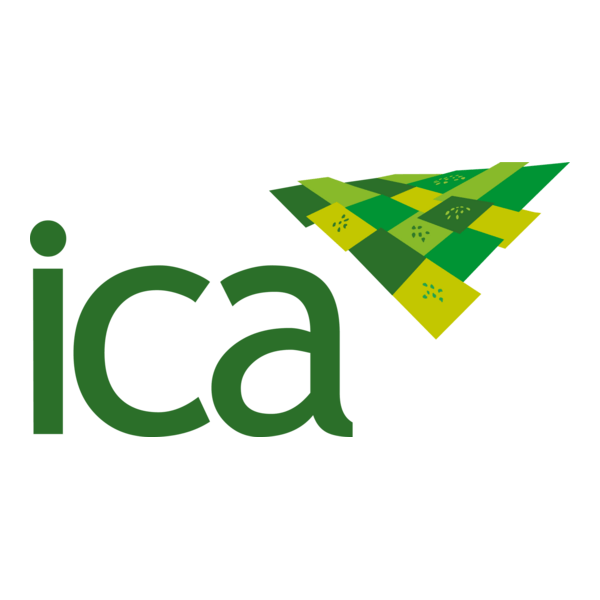

Acreditación ISO/IEC 17065:2012 (Próximamente)
Números que nos respaldan
Más de una década entregando resultados confiables y oportunos
+
0
AÑOS DE EXPERIENCIA
+
0
EQUIPOS DE LABORATORIO
+
0
CLIENTES SATISFECHOS
+
0
RESULTADOS ANUALES
+
0
%
RESULTADOS A TIEMPO
Certificaciones y Acreditaciones

ISO/IEC 17025:2017
Descargar Certificado
Certificación Seccional de Salud
Descargar Certificado
Resolución No. 229 de 2024
Descargar Resolución

Certificación ICA
Descargar Certificado
 ISO 17065:2012 (Próximamente)
Disponible Pronto
ISO 17065:2012 (Próximamente)
Disponible Pronto
Nuestros Portafolios Especializados
Descarga nuestros portafolios de servicios y certificaciones para cada sector
Portafolios en Español
Alimentos
Descargar PortafolioCannabis Medicinal
Descargar PortafolioCalidad de Aire
Descargar PortafolioCosméticos
Descargar PortafolioBiodegradabilidad
Descargar PortafolioEnglish Portfolios
Cannabis (English)
Download CertificateFood Portfolio (English)
Download DocumentServicios Destacados
Soluciones analíticas especializadas para cada sector
¿Listo para obtener resultados confiables?
Únete a más de 2,500 clientes que confían en Aoxlab para sus análisis y certificaciones
¿Necesitas ayuda?